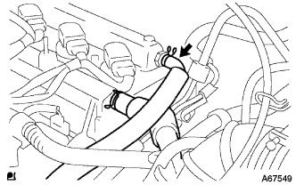
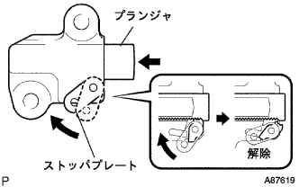
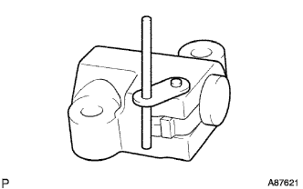

Chain sub-asset removal |
| 1. Battery minor Starminal Cut off |
| 2. Remove the front tire RH |
| 3. Remove the cylinder head cover No.2 |
 |
Remove the four nuts and remove the Cylinder Hetted Cover No.2.
| 4. Ignition coil No.1 |
Remove the connector and bolt of Ignitsushiyon coil and remove the entire Ignitsushiyon coil.
| 5. Cut the ventilation hose |
|  |
Cut the ventilession hose.
| 6. Ventilation hose No.2 disconnected |
 |
Separate the No.2 ventilesso hose.
| 7. Cylinder head cover SUB-ASSY |
 |
Remove nine bolts and two nuts and remove the cylinder head cover.
| 8. Fan & Alternator V Belt removed |
 |
Loosen the adjustment bolt A and the fixing bolt B.
Loosen the tension of the V belt and remove the V belt.
| 9. Remove the alternator ASSY |
 |
Take off the terminal cap.
Separate the connector and harness clamp.
Remove the nut and remove the B terminal terminal.
 |
Remove the bolt A and nuts and remove the fan belt agasting bar.
 |
Remove the fixed bolt B and remove the alternator.
| 10. The engine Anda cover RH is removed |
Remove two bolts and two screws.
Remove the nut and remove the engine undercover RH.
| 11. Drain the engine oil |
| 12. Cooling solution (Toyota genuine super LLC) extract |
Open the radiator kayatsu.
Loosen the radiator drain kotsu plug and extract the cooling solution.
| 13. Vane pump V belt removed |
 |
Loosen the fixing bolt A and bolt B for adjustment.
Remove the V belt by loosening the tension of the V belt.
| 14. Remove the water pump pulley |
Use SST to fix the water pumpuri.
 |
Remove the three bolts and remove the water pumpuri.
| 15. The engine water pump is removed |
 |
Remove 3 bolts and two nuts and remove the water pump ASSY.
| 16. The engine mounting insulator SUB-ASSY RH is removed |
 |
Supporting the engine with jaggedness via a piece of wood.
 |
Remove the 5 bolts and nuts and remove the engine mount in -effect.
| 17. The engine mounting bracket RH is removed |
 |
Remove the four bolts and remove the engine mountain mountain braketto RH.
| 18. Crankshaft Dampa SUB-ASSY |
No.1 Cylinder compressed death point set
 |
Rotate the crankshaft damper correctly and adjust the matching mark (notch) to the position of 0 ° Chien cover.
At this time, confirm that the combination of the camshaft timing gear is at the position of the figure.
Operate the jagged, lower the engine front side and set the SST to set.
 |
Use SST to fix the crankshaft damper and remove the bolt.
Take off the crankshaft damper.
| 19. Remove the crank position sensor |
 |
Cut the connector.
Remove the bolt and remove the crank Posysisillon sensor.
| 20. Camshaft timing oil control valve ASSY is removed |
Camshhaft timing Oil Control valve is disconnected.
Remove the bolt and remove the camshaft timing oil control valve.
| 21. Oil pump ASSY removes |
 |
Remove 15 bolts and nuts.
 |
Use a flathead screwdriver wrapped with protective tape to remove the oil pump ASSY.
| 22. Remove the oil pump seal |
 |
Use a flathead screwdriver with protective tape to remove the oil seal.
| 23. Chain tensioner ASSY No.1 |
 |
|  |
Push the plunger in the back while the lock is unlocked.
 |
Put the stopper plate down from the state where the plunger was pushed into the back and lock the plunger.
|  |
Insert a φ3mm stick or hexagonal wrench into the hole of the stopper plate from the locked state.
Remove the two bolts and remove the chain tensioner ASSY No.1.
| 24. Remove the chain tensioner slippers |
Remove the bolt and remove the chain tension lippers.
| 25. Chain vibration Dampa No.1 |
Remove the two bolts and remove the chain vibration Dampa No.1.
| 26. Chain SUB-ASSY |